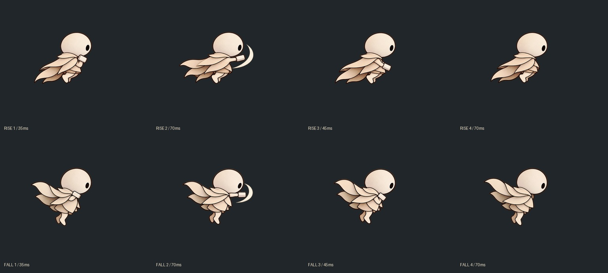

플레이어 · 동작 연결 테스트
Idle · Run · Jump · Fall · Dash · 공중 공격 연결을 직접 확인하세요.
정면 낙하 공격 · v2
불러오는 중…
← / A
D / →
점프 · Space
대시 · Shift
공중 공격 · J
일시정지
재생 속도
0.25×
0.5×
1×
초기화
높은 곳 점프 → 계속 낙하
긴 낙하 중 정면 공격
점프 상승 공격
발판 낙하 공격
상승 → 하강 공격
전체 연결 시연
Idle → Run → Idle
Idle → Jump → Idle
Run → Jump → Run
Run → Jump → Idle
착지 → 연속 점프
Run → Dash → Run
Dash → Jump
Jump → Air Dash
발판에서 낙하
이동하며 낙하
Fall → Air Dash
점프·낙하 공격 원화8장 보기

원화 경로·프롬프트·제작 기록